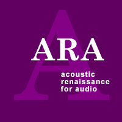
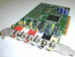

- audio -
|  |
1 or the Windows Media 8 Encoding Utility to take advantage of the quality of Windows Media Audio and Video 8. . Windows Media audio and Video 8 offers the first motion picture-ready video and unmatched audio fidelity at any speed and industrial strength digital rights management. Windows Media Audio 8 Windows Media Video 8 Hear It. Near CD-Quality now at 48 kbps CD-Quality at 64 kbps See It. |
 |
Karlheinz Brandenburg, who is considered by many as one of the fathers of perceptual audio coding and known mostly for his work on MPEG Layer-3 (MP3) and other MPEG audio coding standards. . Video activities are another corner-stone for multimedia competence at Fraunhofer IIS-A complementing the audio expertise. A focus of work was the combination of high quality audio coding with small-sized video using the MPEG-4 video coding scheme. Karlheinz Brandenburg, who is considered by many as one of the fathers of perceptual audio coding and known mostly for his work on MPEG Layer-3 (MP3) and other MPEG audio coding standards. |
The MPEG-7 Call for Proposals (CfP) was issued in November 1998 at the 45th MPEG meeting. MPEG-7 has reached Working Draft status in December 1999 at the 50th MPEG meeting. Frequently Asked Questions MPEG Audio Frequently Asked Questions The updated MPEG Audio FAQ is available now. What does MPEG-4 Audio Version 1 provide above MPEG-2 Audio. What kind of support does MPEG provide for implementers of MPEG Audio.
|  |
|
Bitstream versus pcm debate for high-density compact disc ARA Submissions Ambisonic and Multichannel coding Adobe PDF (18kB) Pre-Emphasis for use at 96kHz Adobe PDF (125kB) High Quality Audio Application of DVD Adobe PDF (76kB) Report Presentation to Japan Audio Society, June 1998 This icon identifies pdf documents. . ARA Home Page Acoustic Renaissance for Audio Welcome to the home page for Acoustic Renaissance for Audio. Message from Professor Hirokazu Negishi, Founder of ARA ARA proposal for High Quality Audio Disc. The ARA circulated a proposal on a High-Quality Audio use of the DVD -- currently under development by WG-4 of the DVD Forum. |
further information: http://www.guidinglightvideo.com/shop/cedarmontaudio1.html